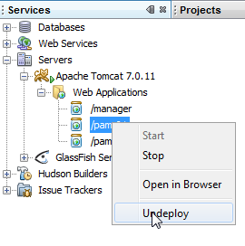

21. Conclusion
We have explored the basics of the Struts 2 framework and presented an application that combines several technologies. Beginners and intermediate-level readers will find material in this document to help them learn and improve. A reference book is still needed. I once again recommend the book:
"Struts 2 in Action" written by Donald Brown, Chad Michael Davis, and Scott Stanlick, published by Manning.
I would like to conclude by highlighting some issues I encountered while writing the examples in this document. I have already noted some unexpected behaviors of Struts 2, particularly when entering numbers and dates. Here are a few other issues I encountered:
Let’s unload the [pam-01] application from the Tomcat server:

The Apache console then displays the following logs:
| Jan 05, 2012 11:18:58 AM org.springframework.context.support.AbstractApplicationContext doClose
Info: Closing org.springframework.web.context.support.XmlWebApplicationContext@57488b9c: display name [Root WebApplicationContext]; startup date [Thu Jan 05 11:18:45 CET 2012]; root of context hierarchy
Jan 05, 2012 11:18:58 AM org.springframework.beans.factory.support.DefaultSingletonBeanRegistry destroySingletons
Info: Destroying singletons in org.springframework.beans.factory.support.DefaultListableBeanFactory@78ae9d8d: defining beans [config, business]; root of factory hierarchy
Jan 5, 2012 11:18:58 AM org.apache.tiles.access.TilesAccess setContainer
Info: Removing TilesContext for context: org.apache.catalina.core.ApplicationContextFacade
Jan 05, 2012 11:19:00 AM org.apache.catalina.startup.HostConfig checkResources
Info: Undeploying the web application with context path /pam-01
|
The unloading was successful.
Let's unload [pam-02] in the same way. The logs are as follows:
| Jan 05, 2012 11:21:07 AM org.springframework.context.support.AbstractApplicationContext doClose
Info: Closing org.springframework.web.context.support.XmlWebApplicationContext@5d9131fa: display name [Root WebApplicationContext]; startup date [Thu Jan 05 11:11:10 CET 2012]; root of context hierarchy
Jan 05, 2012 11:21:07 AM org.springframework.beans.factory.support.DefaultSingletonBeanRegistry destroySingletons
Info: Destroying singletons in org.springframework.beans.factory.support.DefaultListableBeanFactory@7b66d238: defining beans [config,metier,employeDao,indemniteDao,cotisationDao,entityManagerFactory,dataSource,org.springframework.aop.config.internalAutoProxyCreator,org.springframework.transaction.annotation.AnnotationTransactionAttributeSource#0,org.springframework.transaction.interceptor.TransactionInterceptor#0,org.springframework.transaction.config.internalTransactionAdvisor,txManager,org.springframework.dao.annotation.PersistenceExceptionTranslationPostProcessor#0,org.springframework.orm.jpa.support.PersistenceAnnotationBeanPostProcessor#0]; root of factory hierarchy
Jan 5, 2012 11:21:07 AM org.springframework.orm.jpa.AbstractEntityManagerFactoryBean destroy
Info: Closing JPA EntityManagerFactory for persistence unit 'pam-PU'
Jan 05, 2012 11:21:07 AM org.hibernate.impl.SessionFactoryImpl close
Info: closing
Jan 05, 2012 11:21:07 AM org.apache.tiles.access.TilesAccess setContainer
Info: Removing TilesContext for context: org.apache.catalina.core.ApplicationContextFacade
Jan 05, 2012 11:21:07 AM org.apache.catalina.loader.WebappClassLoader clearReferencesJdbc
Severe: The web application [/pam-02] registered the JDBC driver [com.mysql.jdbc.Driver] but failed to unregister it when the web application was stopped. To prevent a memory leak, the JDBC Driver has been forcibly unregistered.
Jan 5, 2012 11:21:07 AM org.apache.catalina.loader.WebappClassLoader clearReferencesThreads
Severe: The web application [/pam-02] appears to have started a thread named [Timer-0] but has failed to stop it. This is very likely to cause a memory leak.
Jan. 05, 2012 11:21:07 AM org.apache.catalina.loader.WebappClassLoader clearReferencesThreads
Severe: The web application [/pam-02] appears to have started a thread named [MySQL Statement Cancellation Timer] but has failed to stop it. This is very likely to create a memory leak.
Jan 05, 2012 11:21:08 AM org.apache.catalina.startup.HostConfig checkResources
Info: Undeploying the web application with context path /pam-02
|
Lines 12, 14, 16: serious errors are reported. Two of them indicate a potential memory leak. Indeed, the [pam-02] application has memory leaks. After a while, the application becomes unusable. You must then close NetBeans and redeploy the application.
The errors all refer to threads. The [pam-02] application does not use threads on its own. We must therefore suspect the frameworks used: Struts 2, Spring 2.5, and Tiles. We can reasonably rule out Tiles, which likely does not handle threads. That leaves Struts and Spring.
We then conduct another experiment:
We implement the [web] layer using the JSF framework instead of Struts 2. Nothing else changes. We then get the same error messages as with Struts 2.
So the culprit seems to be Spring, the dbcp connection pool used here by Spring, or perhaps myself if I didn’t use Spring correctly. I might have forgotten a Spring configuration that would clean up the created threads; I might have… The solution to this memory leak problem therefore remains to be found.
Another experiment. The NetBeans IDE comes bundled with the Tomcat and GlassFish servers. Let’s try running an application created in this document on GlassFish:
- in [2] the properties of the [example-08] project [1]
- in [3], the web server selection
Here is the page retrieved in the browser:
The expected portability is not achieved. There are two errors here:
- in [1], internationalization did not work
- in [2], there is an exception
For most of the applications developed in this document, we encounter these same two errors. I have not attempted to resolve this new issue.